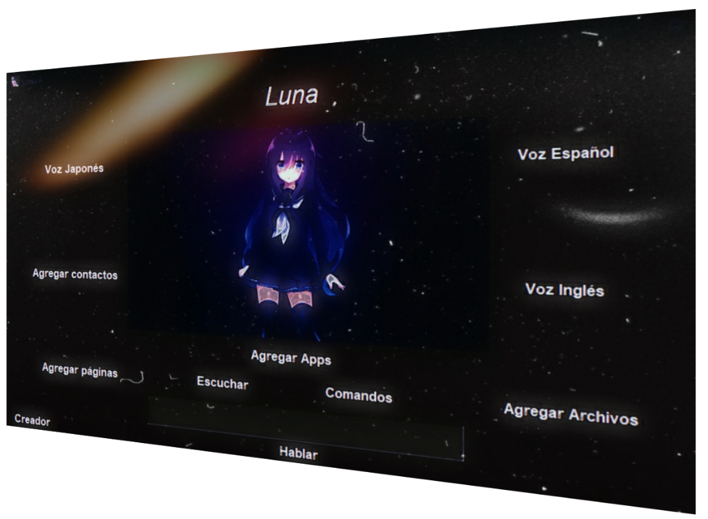

Luna IA
Bienvenidos a uno de nuestros asistentes virtuales llamada Luna, aquí podrán ver todas las características, como usarla entre muchas otras cosas.
¿Quién y cómo se creó Luna?
Luna fue creado originalmente creada por 𝓓𝓪𝓻𝓴𝓣𝓸𝔁🥀#0001 (usuario de Discord), siempre le interesó el tema sobre inteligencia artificial y asistentes personales como Cortana, alexa entre otras, nunca satisfacieron las necesidades de 𝓓𝓪𝓻𝓴𝓣𝓸𝔁🥀, investigó como crear su propia asistente virtual y comenzó a hacerla, la llamó Luna, ya que el nombre le gustaba mucho. Tiempo después la mostró a uno de sus amigos y le dió la idea de dar a conocer a Luna subiéndola a la Play Store o para PC, desde ese momento comenzó su amigo llamado 🅹 🅾 🆁 🅳 🅳 🆈 ENP#0001 (Usuario de Discord) se unió a su equipo y ambos trabajan para dar a conocer a Luna.

Novedades
La última actualización de Luna tiene las caracteristicas de poder agregar páginas, archivos y aplicaciones para poder iniciarlas por voz, también al buscar algo por wikipedia te saltará una ventana resumiendo todo para puedas leerlo aparte o puedas copiar y pegar, también podrás mandar mensajes por whatsapp sin necesidad de escribirlos, solo tendrás que decir a quién quieres enviar el mensaje, lo que quieres escribir y Luna hará el resto.
